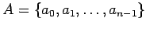
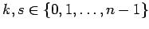
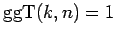
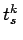
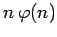
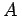
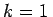

Inhalt Index DeskTop Bronstein

 Algebra und Diskrete Mathematik Kryptologie Sicherheit von Kryptosystemen
Algebra und Diskrete Mathematik Kryptologie Sicherheit von Kryptosystemen


Ist  und  mit dem , dann wird die Permutation , die jeden Buchstaben ai auf tsk(ai) = aki+s abbildet, eine Tauschchiffre genannt.
Es gibt  verschiedene Tauschchiffren auf .
Verschiebechiffren sind Tauschchiffren mit . Die Verschiebechiffre mit s=3 wurde schon von JULIUS CAESAR (100 bis 44 v. Chr.) benutzt und heißt deshalb CAESAR-Chiffre.